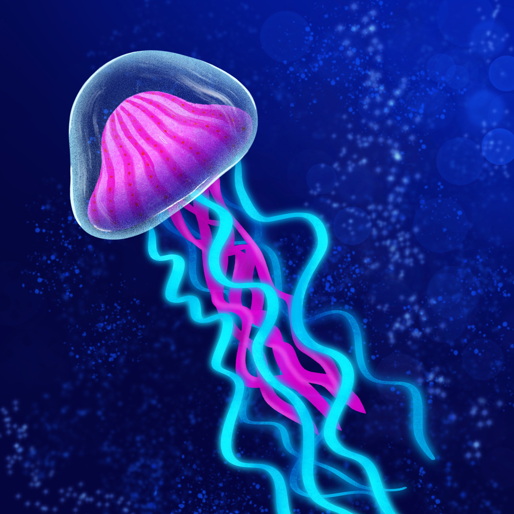
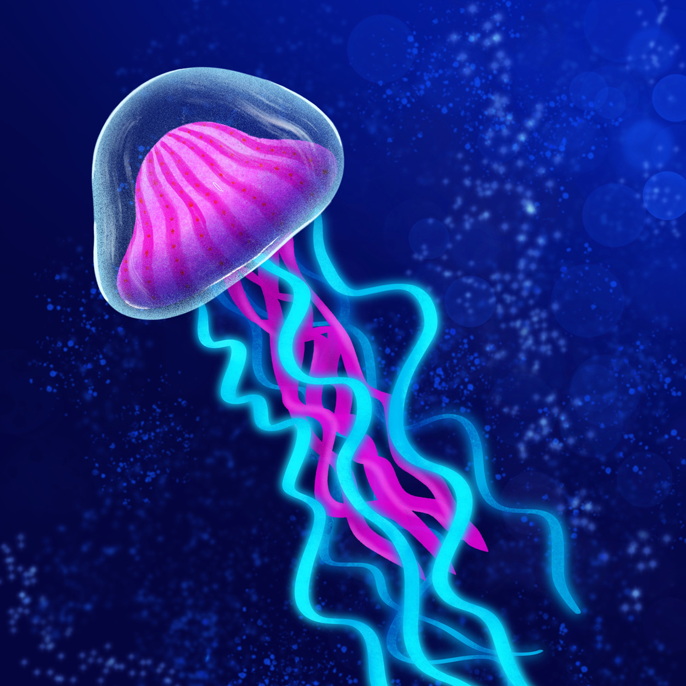
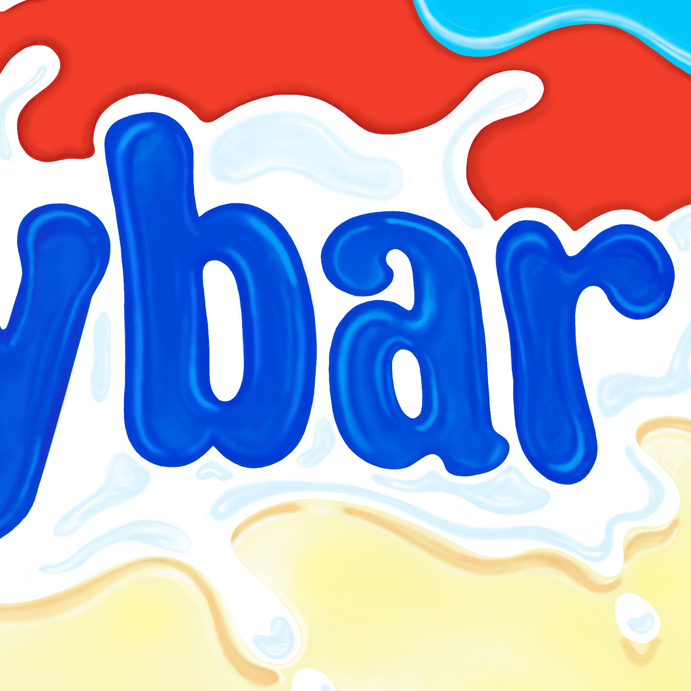
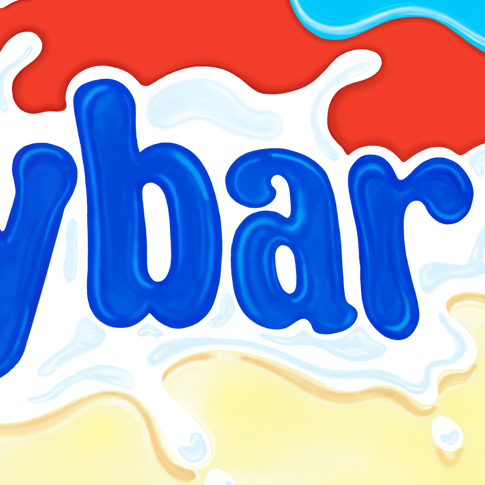

I am fortunate enough for my passion to have become my career. Offering a balance between digital design and traditional drawing skills, my talents extend beyond a computer combining creative, technical, and analytical qualities. Telling old stories and listening to new ones is something I love to do, and I believe storytelling is at the forefront of communication. You can usually find me with my husband and friends, (or hiking, swimming, kickboxing, running, and painting). I also love to eat Nutella from the jar and create logos in my spare time.
Eve
rydays
Hello, I'm Eve. These pictures are all created from start to finish every day. The purpose of this project is to carve out moments of self-expression and spark the artist within.
It's easy to procrastinate, or lose track of time. By documenting these artworks online it helps me to be more creative and persevere at something I love. This is my first year of 'everydays', and I will be focusing on drawing with the Procreate app. I will be experimenting with different brushes, compositions, subjects, and learning the basic techniques.
Everydays of 2019
 



 
